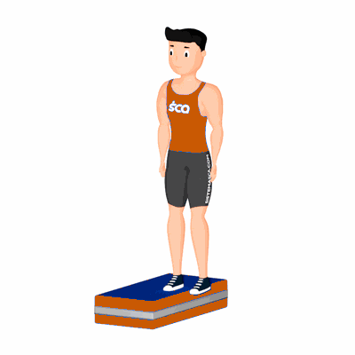

Agachamento Curto Unilateral Isométrico

O exercício trabalha unilateralmente os músculos do glúteo, quadríceps e isquiotibiais.
Ficha Técnica
Tipo: Funcional
Grupo Muscular: Perna
Aparelho: Nenhum
Músculos: Nenhum
Como realizar
- Apoie uma perna em um Step e estenda a outra ao lado;
- Flexione o joelho da perna apoiada fazendo um curto agachamento e volte à posição inicial;
- Ao terminar as repetições, inverta a posição das pernas e repita os movimentos.
 RC STORE
RC STORE